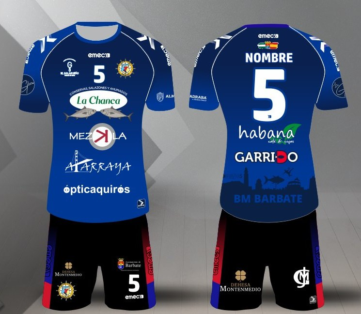
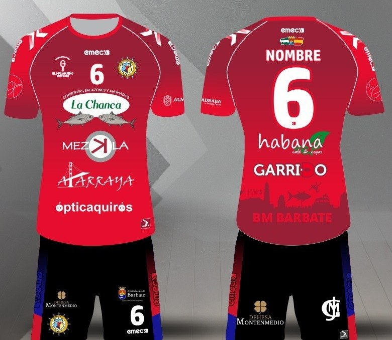
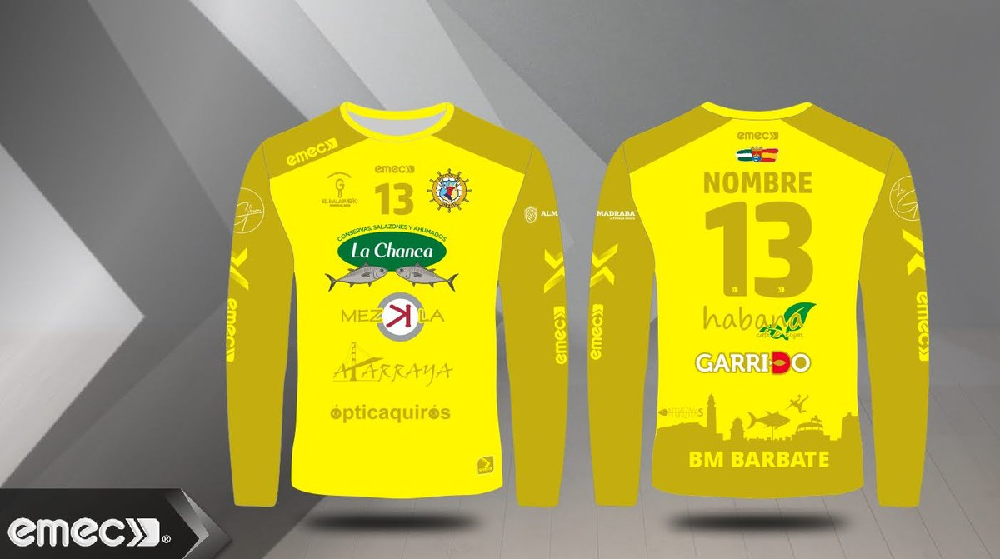
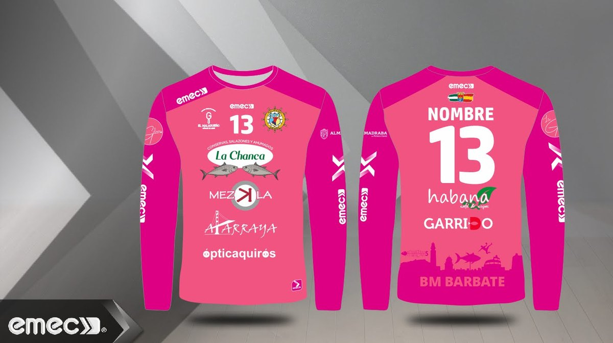
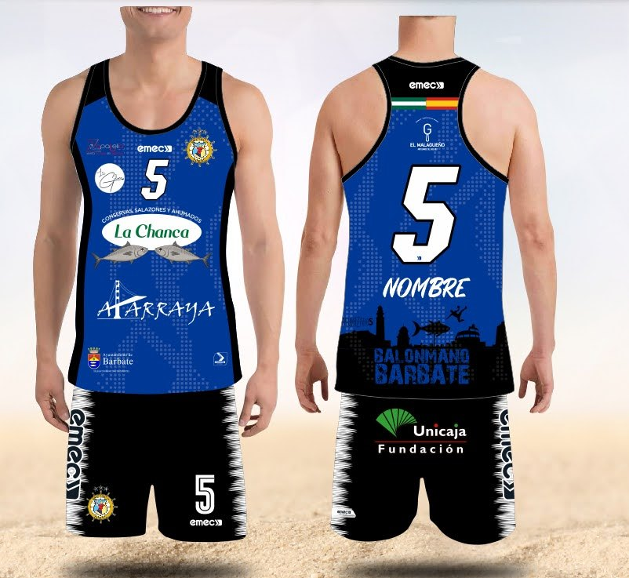
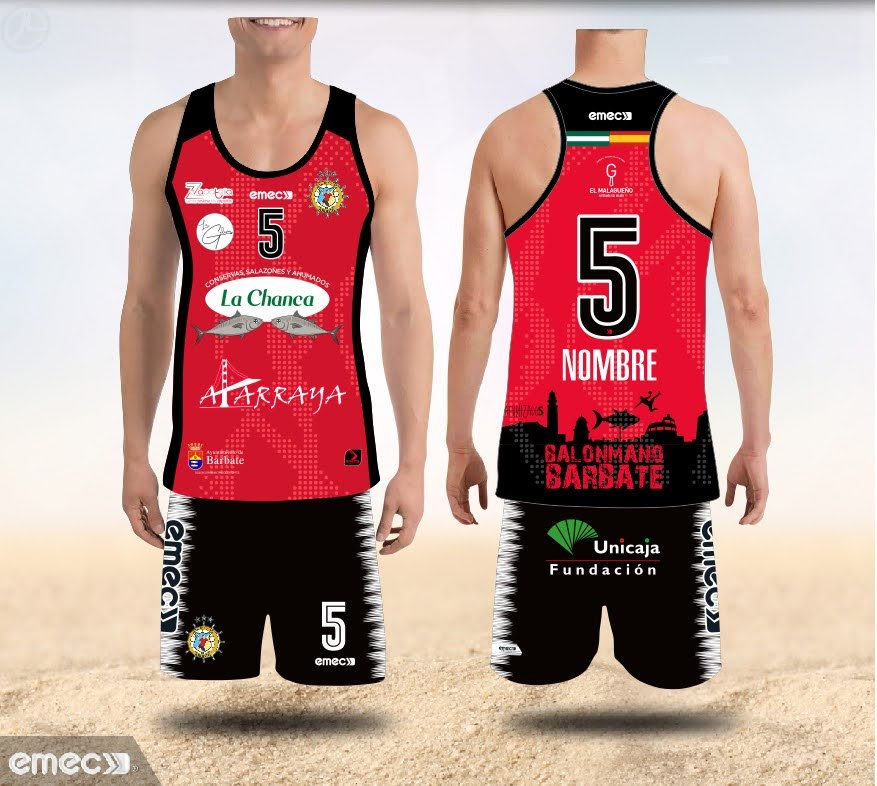
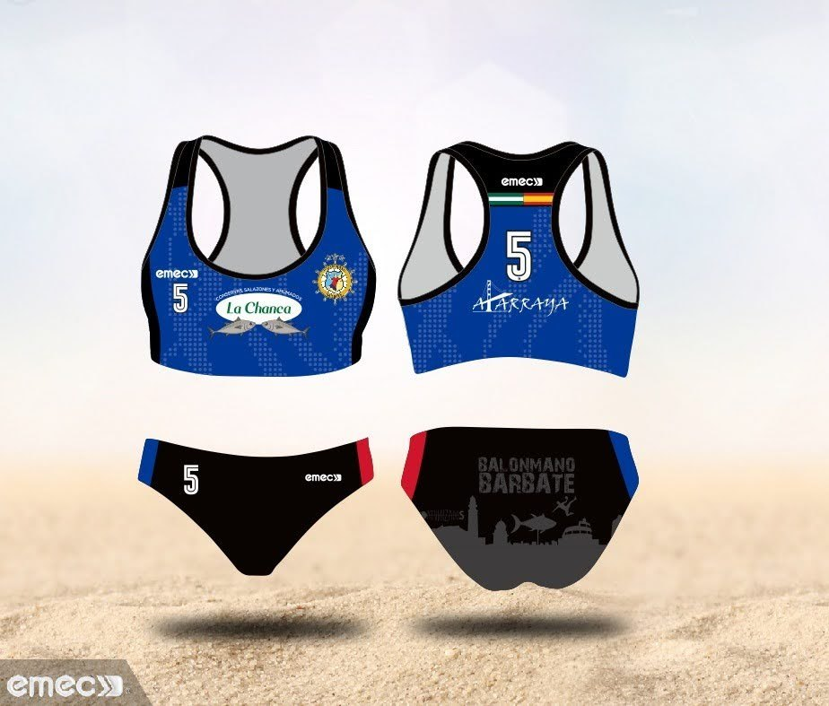
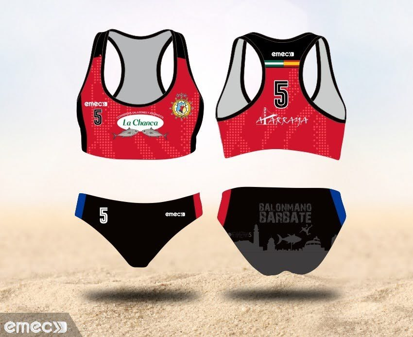
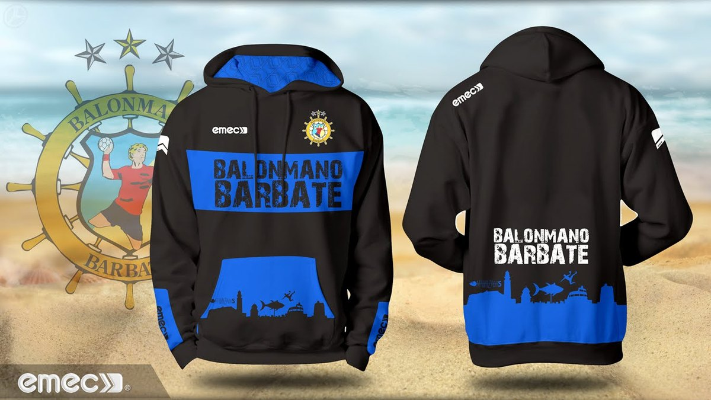

Temporada 2025 / 2026
Equipaciones
Los colores con los que el club salta a la pista y a la arena, con el escudo de Barbate y los patrocinadores que lo hacen posible.
Balonmano Pista
Juegos de pista
Los dos juegos de camiseta y pantalón con los que compiten los equipos en el Pabellón Municipal.

Azul
La de casa: camiseta azul con vivos blancos y pantalón negro con franjas azul y roja.

Roja
La alternativa para cuando el rival también viste de azul.
Bajo palos
Portería
Colores distintos, como manda el reglamento, para distinguir a quien defiende los seis metros.

Amarilla

Rosa
Balonmano Playa
Equipaciones de arena
Las que viajan a los torneos de arena de la provincia y a los circuitos nacionales.

Azul

Roja

Azul

Roja
Fuera de la pista
Ropa de paseo

Azul del club
Para los desplazamientos, los calentamientos y las gradas.